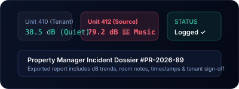
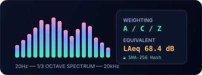
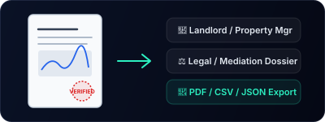
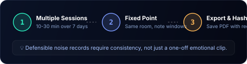
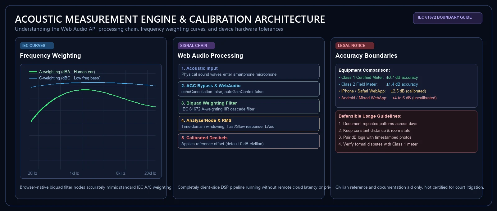

Give property teams a consistent way to record complaints and follow-up visits.
SOUNDTEST.PRO turns resident noise complaints into structured local records with building, floor, room, point, place labels, dB summaries, media, and reports.

Structured points
Save building, floor, room, and measurement point fields so repeated visits are easier to compare.

Local-first evidence
Records stay in the browser unless staff export media, PDF, CSV, or JSON evidence manifests.

Team signal
Use Pro/Team inquiry events to validate whether property companies need shared evidence libraries later.

Where this template helps most
- Resident complaint triage and logging.
- Equipment room noise checks.
- Public area follow-up visits.
- Community mediation records.

Field documentation scope
SOUNDTEST.PRO is not a certified sound level meter. It organizes field documentation before professional review, not official enforcement-grade measurement.
Frequently asked questions
Who handles a noise complaint, the landlord or the city?
Both can, and they cover different situations. Your landlord is responsible for enforcing lease terms and resolving disputes between tenants on the property. The city handles ordinance violations like construction hours, venue noise, and noise that crosses the property line into public space. Start with the landlord in writing, and escalate to the city if the issue persists or originates outside the building.
What is the difference between HOA and city noise enforcement?
An HOA enforces private community rules, which can be stricter than city law but only applies to common areas and HOA members. City code enforcement applies to everyone in the jurisdiction, regardless of HOA membership, and is the right path for violations of public noise ordinances. Many people file both, since each can lead to a different remedy.
How do I file a formal noise complaint?
Document at least a week of incidents with timestamps, dB readings, and short notes. Submit a written complaint to the responsible party (landlord, HOA, or city) by email or an online form, and attach your exported PDF report. Keep copies of everything you send and receive. SOUNDTEST.PRO PDF exports are designed for this exact workflow.
How long does a noise complaint take to resolve?
Expect 2 to 6 weeks for first contact and initial review, and another 2 to 8 weeks for substantive action depending on jurisdiction and severity. Repeated, well-documented complaints move faster than one-off reports. Continue documenting while the process is in motion so you have current data if escalation is needed.
SOUNDTEST.PRO is a documentation-grade estimate tool, not a certified sound level meter. Verify any formal claim with calibrated equipment and qualified measurement procedures.